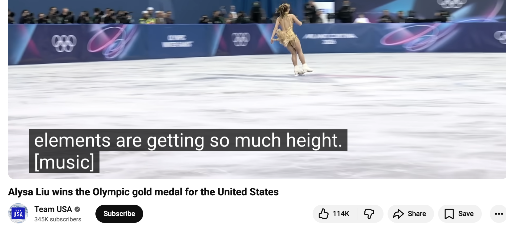
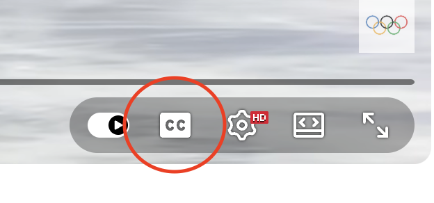
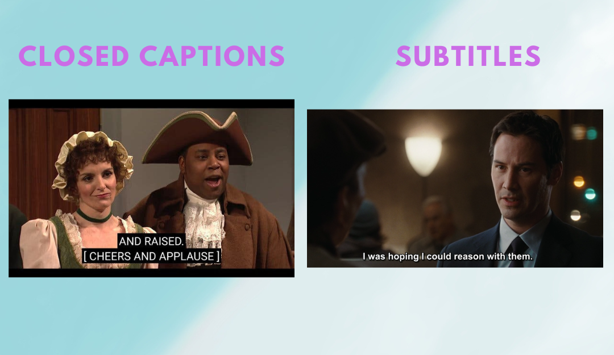
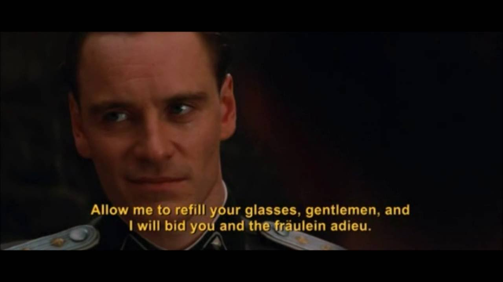
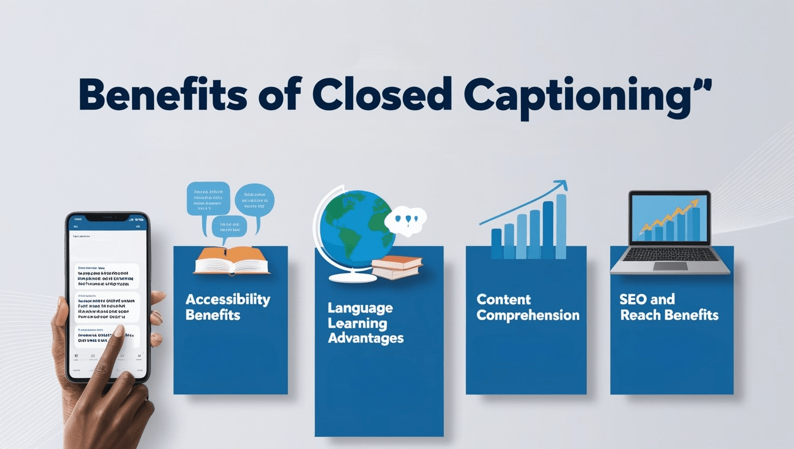

In a primarily online world with a lot of visual media, you have likely come across the term “closed captions” but you may have never used them or understood exactly what they are. Closed captioning is on-screen text that appears and is synchronized to the words and sound effects of an audio piece or video. According to 3Play Media, closed captioning is “time-synchronized text that reflects an audio track and can be read while watching visual content”. (Khesin, 2015) Often you will see captions appear as black highlighted lines of white text at the bottom part of a video or movie’s screen.

Screenshot courtesy of Jane Edison 03/09/2026
There is usually an option to turn on closed captions for a video with an audio component represented by a little icon with the letters “CC”.

Screenshot courtesy of Jane Edison 03/26/2026
It can be confusing to select “Closed Captions” and then see “Subtitles” as an option, so it’s important to understand the difference. Subtitles only include spoken words and are typically for translating speech, while closed captions prioritize accessibility by including all auditory information like speech and other important sounds. The W3C Accessibility Organization differentiates between the two saying:
“Subtitles are implemented the same way as captions. Subtitles/interlingual subtitles are usually only the spoken audio (for people who can hear the audio but do not know the spoken language). They can be a translation of the caption content, including non-speech audio information. Captions are needed for accessibility, whereas subtitles in other languages are not directly an accessibility accommodation.” (W3, Captions and Subtitles)
With this distinction, we can understand that closed captions are meant to describe all audio features in a given piece of visual content, rather than just the spoken words. This is important for individuals who cannot hear the spoken words. Subtitles are meant to provide a visual representation and transcript of the words in a desired language, making them useful to individuals who do not speak the language of a piece of media, and can have subtitles translated into the language they desire.
In the example comparison below, you can see that closed captions follow a standard accessibility model with capital letters and brackets, whereas subtitles are customized to the streaming platform and the media itself. These distinctions reflect the accessibility measures of closed captions, and its best practices.

Photo from Vdo Cipher
Closed captioning is often an option on visual pieces of media, whereas if something has “open captions” there is no option to turn them on or off, they automatically accompany the video.
“Closed captions allow the viewer to toggle the captions on and off, giving them control of whether captions are visible. On the other hand, open captions are burned into the video and cannot be turned off. Closed captions are more common with online video, while open captions can be found on kiosks.” (Khesin, 2015)
With open captions, you might see them on newscastings, social media videos, and visual pieces of media. Think of televisions in salons or barber shops where the captions are on screen following the audio without needing to be turned on. Another example could be in a film where foreign languages are used, and captions to immediately translate them have already been burned into the movie as a feature separate from closed captioning capabilities.
Open captions can be customized and edited in post-production processes, whereas closed captions have to follow a standard, text-only formatting for accessibility purposes. Open captions are added in post-production and rendered directly into the video file. Closed captions are a separate text file with timing data that is uploaded alongside the video. However, depending on the medium in which you are watching the video, you can sometimes adjust the size or location of closed captions. Open captions are different in this case as the settings that were published in the video file are the only options available for viewing, and you cannot turn them off.
As a content creator, it is advisable to include closed captions in a video, as you can control the accuracy and grammar through closed captioning technology. If you don’t want the option for captions and you determine that your video needs captions regardless, it would be best to create and establish open captions in the video before it is published. This decision can be made in regards to the accessibility standards that you choose to adhere to, or the type of content you are creating. Regardless, a form of captioning should always be available on a video to be as accessible as possible.

Screenshot from youtube video “Inglorious Basterds - Bar Scene”
No! Captions and transcripts are different because captions are always synchronized with a video or visual element, whereas transcripts are separate from a video. “Transcripts are sufficient for audio-only content like a podcast, but captions are required for videos or presentations that include visual content along with a voice-over.” (Khesin, 2015)
This is not to say that transcripts are not useful. For accessibility purposes, you will need captions to adhere to W3C’s rules, which govern most web accessibility guidelines. WCAG 2.2 requirements for closed captions demand that all prerecorded audio content in synchronized media have accurate, synchronized text captions (Level A) and that live captions are provided for live video (Level AA). Transcripts are only required for pre-recorded video-only content at a Level A for accessibility. So if you were wondering what you should do, it would definitely be to make sure you have captions on your video or media.
Closed captioning plays an important role in making media accessible, inclusive, and understandable for a wide range of audiences. Developed to support individuals who are deaf or hard of hearing, closed captions have provided, and still do provide a written version of spoken dialogue as well as important non-speech elements like sound effects, music cues, and speaker identification. In countries such as the United States, accessibility laws like the Americans with Disabilities Act have helped make captioning a standard feature across television, streaming platforms, and online video content.

Image from VerboLabs
Closed captioning is also specific in its accessibility, which the very definition of closed captions inherently includes. 3Play Media notes:
“In order to be considered fully accessible, captions should assume that the viewer cannot hear the audio at all. This means closed captions should include not only a transcription of spoken dialogue, but also any relevant sound effects, speaker identifications, or other non-speech elements that would impact a viewer’s understanding of the content. The inclusion of these elements make closed captions significantly different from subtitles, which assume that the viewer can hear but cannot understand the language – meaning subtitles primarily serve to translate spoken dialogue.” (3PlayMedia, Closed Captioning)
Beyond accessibility, closed captioning benefits many other viewers. When you’re watching content in noisy environments, like airports or gyms, or in quiet spaces where sound isn’t practical, you may rely on captions to follow along. Captions also support language learners by reinforcing vocabulary, spelling, and pronunciation through simultaneous reading and listening.
In today’s digital world, where video content dominates social media, marketing, and online learning, closed captioning promotes equity and engagement. It can help you ensure that access to information is not limited by hearing ability, language barriers, or environment. Ultimately, closed captioning reflects your broader commitment to inclusion, communication, and equal access to information for everyone.